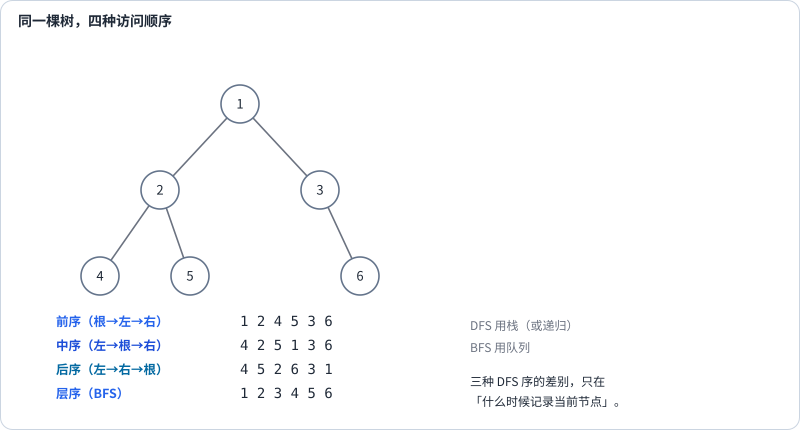

第 14 讲 · 树上的算法¶
阅读起点：第 7 讲：递归；第 11 讲：树节点。
首读范围：先算深度，再区分直径答案与返回高度；序列化选读。
第 11 讲用 BST、第 13 讲用 Trie 建立索引。这一讲换个视角：把树当成"递归的数据结构"本身，讨论在它上面做计算的一整套方法。
树题的代码通常只有十几行，但很容易写错。原因几乎总是同一个：没想清楚"递归函数返回什么"。 所以这一讲的核心不是算法清单，而是给你一套判断流程。
先亲手算一棵树的深度¶
本讲的 depth 按节点个数计：空树0，叶子1。第11讲AVL高度按边数计：空树-1，叶子0，二者相差1。直径仍按边数计，不要把三个单位混在一起。
先用和 LeetCode 一致的 val 字段准备节点。这个类与第 11 讲的 BSTNode 表示相同的左右连接，但本讲的普通二叉树不要求左小右大：
class TreeNode:
def __init__(self, val):
self.val = val
self.left = self.right = None
root = TreeNode(1)
root.left = TreeNode(2)
root.right = TreeNode(3)
def max_depth(node):
if node is None:
return 0
left = max_depth(node.left)
right = max_depth(node.right)
return 1 + max(left, right)
根1、左叶2、右叶3：计算根之前，先调用左叶，叶子向两个空孩子分别得到0，返回1；右叶同样返回1；根最后返回 \(1+\max (1,1)=2\)。函数里左右两个调用都要返回之后，父调用才能继续。这叫自底向上汇总。
遍历就是按某种顺序访问每个节点一次。图中的前/中/后序，是把“记录当前节点”放在递归左、右调用之前/之间/之后；这些都沿一条分支深入再返回，称为深度优先遍历（DFS）。层序则先访问近的一层，再访问下一层，属于广度优先遍历（BFS），后面会用队列实现。
两类递归¶

这是树题最重要的分水岭。
自顶向下：函数的参数里带着"从根走到当前节点积累的信息"，返回值是答案本身或不返回。典型的是"路径上的最大值"（判断好节点）、"值的允许区间"（验证 BST）、"剩余目标和"（路径和）。这类问题的共同点是：约束是从祖先传下来的。
自底向上：函数返回"关于这棵子树的统计量"，父节点用左右子树的结果算出自己的结果。典型的是高度、直径、平衡、最大路径和。共同点是：答案要从子树的形状里归纳出来。
判断方法是一句话：答案需不需要"跨过当前节点，把左右两边连起来"？ 需要时常用自底向上合并；函数可以返回一个统计量或一个元组，不是所有题都必须分开维护全局答案。
用一道题把这个区别说透¶
求二叉树的直径（任意两节点间最长路径的边数）。
关键观察是：任一条路径都有一个"最高点"，在这一点向左下、右下各延伸一段。所以经过某节点的最长路径就是"左高 + 右高"。
def diameter_of_binary_tree(root):
best = 0
def depth(node):
nonlocal best
if node is None:
return 0
l, r = depth(node.left), depth(node.right)
best = max(best, l + r) # 答案：在当前节点拐弯
return 1 + max(l, r) # 返回值：单边高度，给父节点用
depth(root)
return best
为什么公式里没有再加2？l 是左子树的节点深度，已经等于“从当前节点沿左边走到最深叶子”的边数：l=1表示只有一个左孩子，对应1条边。根1与两个叶子2、3有 l=r=1，穿根直径就是2，而向父节点返回的深度是2。这两个2在此碰巧相同，一条更长的双叉树就会不同。
nonlocal best 表示内部函数修改外层的同一个 best，不是创建自己的局部变量。每个节点被处理一次，时间\(\mathcal{O}(n)\)；未返回的递归调用最多h+1个，辅助空间\(\mathcal{O}(h+1)\)。
depth 返回的是"单边量"——高度只能沿一条路往上传；best 是"双边量"——路径可以在这里同时用两条腿。把这两个东西混为一谈，这道题就写不出来。
最大路径和也用这个合并结构，但统计的是节点值之和。本题约定树非空，路径至少含一个节点；与直径的边数是不同单位。允许负值时，需决定是否接入某一侧。
def max_path_sum(root):
best = float('-inf')
def gain(node):
nonlocal best
if node is None:
return 0
l, r = max(0, gain(node.left)), max(0, gain(node.right))
best = max(best, node.val + l + r)
return node.val + max(l, r)
gain(root)
return best
max(0, ...) 有两个作用：截断负数子树（走那边只会更差），以及把空节点统一成 0。而 best 必须初始化成 -inf 而不是 0——路径至少要包含一个节点，如果树里全是负数，正确答案是最大的那个负数。
用简写 节点值(左子树,右子树) 描述一棵树：-10(9,20(15,7)) 表示根为 -10，左孩子为 9，右孩子为 20，而 20 的左右孩子分别为 15、7。按递归实际返回次序走一遍：
| 节点 | gain(左) | gain(右) | best | 返回值 |
|---|---|---|---|---|
| 9 | 0 | 0 | 9 | 9 |
| 15 | 0 | 0 | 15 | 15 |
| 7 | 0 | 0 | 15 | 7 |
| 20 | 15 | 7 | 42 | 35 |
| -10 | 9 | 35 | 42 | 25 |
表按代码实际的“左子树先算”顺序填写。gain 返回的单边路径收益只沿一个分支往上传；best 可以在节点处把两侧接起来。
答案 42（路径 15 → 20 → 7）。注意根处算出来的 34 比 42 小——答案不一定经过根。
自顶向下的两个例子¶
这里要返回二叉树中“好节点”的总数。一个节点是好节点，当且仅当从根到它的路径上没有值比它更大的节点；根总是好节点。例如根为 3，左右孩子为 1、4，那么 3 和 4 合格，1 不合格，答案为 2。判断时只需要知道"从根到它的路径上的最大值"，把它当参数往下传：
def good_nodes(root):
def dfs(node, max_so_far):
if node is None:
return 0
count = 1 if node.val >= max_so_far else 0 # 相等也算
new_max = max(max_so_far, node.val)
return count + dfs(node.left, new_max) + dfs(node.right, new_max)
return dfs(root, float('-inf'))
初始值用 -inf，这样根节点必然被计入。判断用 \(\ge\)——题目说"没有比它更大的值"，所以相等也是好节点。
验证 BST 是同一套写法，只是传的是上下界（第 11 讲展开过）：
def is_valid_bst(root):
def valid(node, lo, hi):
if node is None:
return True
if not (lo < node.val < hi):
return False
return valid(node.left, lo, node.val) and valid(node.right, node.val, hi)
return valid(root, float('-inf'), float('inf'))
这两题放在一起看，"自顶向下"就通了：一个传单侧最大值，一个传区间，本质都是"把祖先给的约束往下带"。
层序遍历¶
输入一棵二叉树，按从上到下的层次收集节点值，每层内部从左到右，返回一个二维列表。例如本讲最初的树根 1、左叶 2、右叶 3，结果应为 [[1],[2,3]]；空树返回 []。
队列先放根。处理当前层时，依次取出这一层的节点，并把它们的孩子放到队尾，供下一层处理。关键是先记住本层有几个节点，避免把刚加入的下一层也处理掉：
from collections import deque
def level_order(root):
if root is None:
return []
res, q = [], deque([root])
while q:
level = []
for _ in range(len(q)): # 关键：循环开始时锁定本层节点数
node = q.popleft()
level.append(node.val)
if node.left: q.append(node.left)
if node.right: q.append(node.right)
res.append(level)
return res
for _ in range(len(q)) 是层序的核心：它在循环开始时把这一层的节点数固定下来，因为 range 在循环开始时就求值了，内层的 append 不会影响循环次数——这正是这个技巧能工作的原因。
同一件事也可以用 DFS 做：把从根起算的层号 depth 当参数传下去，根为 0。第一次遇到新层时先执行 if depth==len(res): res.append([])，创建这一层的列表，再执行 res[depth].append(node.val)，然后按左、右顺序递归孩子，层号加 1。前序遍历天然保证同层从左到右，所以结果完全一致，辅助遍历空间为 \(\mathcal{O}(树高)\)，BFS 队列为 \(\mathcal{O}(最宽层)\)；两者输出都要 \(\mathcal{O}(n)\)，链状树的 DFS 栈反而可能更大。对完全二叉树这类"最宽层远大于树高"的树，这是明显改进。
序列化¶
把树编码成一个字符串再还原，难点在于空节点必须显式记录——否则 [1,2] 和 [1,null,2] 会生成同一个序列。
def serialize(root):
out = []
def dfs(node):
if node is None:
out.append('#')
return
out.append(str(node.val))
dfs(node.left)
dfs(node.right)
dfs(root)
return ','.join(out)
def deserialize(data):
tokens = iter(data.split(','))
def build():
val = next(tokens)
if val == '#':
return None
node = TreeNode(int(val))
node.left, node.right = build(), build()
return node
return build()
例如只有左孩子的树 1(2,None) 编成 1,2,#,#,#；只有右孩子则编成 1,#,2,#,#，空标记使两者可区分。iter 创建逐个读取 token 的迭代器，next(tokens) 每次恰好消耗一项；build 先读根，再递归读完整左子树和右子树。这里假定输入是 serialize 生成的合法字符串。
为什么序列化和反序列化都用前序？ 因为前序把根放在最前面，反序列化时"先消费到的就是根"，两者天然对齐。
树上证明的模板¶
树的递归定义给了一种通用证明结构：先证空树满足性质，再假设左右子树都满足、推出整棵树满足。
拿高度举例。设 \(f(T)\) 是函数返回值、\(h(T)\) 是真实最大深度。空树时 \(f = 0 = h\)。归纳步：真实深度 \(h(T)=1+\max(h(T_L),h(T_R))\)（根到最远叶子的路径必然先落到某个子树里），而 \(f(T)=1+\max(f(T_L),f(T_R))\)，两者相等。
拿直径举例，就能看清"返回值不等于答案"：穿过根的最长路径是 \(\operatorname{depth}(T_L)+\operatorname{depth}(T_R)\)，不穿过根的完全落在某个子树里，所以
depth 只能沿一条路往上传播，best 可以在任意节点合并两条路——这就是这两类量的形式化差别。
从讲义走到代码¶
统计目录的最大嵌套层数可以自底向上汇总子树深度。
先建根 1、左叶 2、右叶 3，写 max_depth 得 2；再给 2 加左叶 4，深度变成 3。每次递归先说清“返回这棵子树的什么量”。
然后做 Diameter of Binary Tree：求任意两节点之间最长路径的边数。先前两棵树的直径分别为 2、3，但根返回的深度碰巧也为 2、3，尚不能区分这两个量。再给第二棵树的右孩子 3 加右叶 5：路径 4→2→1→3→5 的直径为 4，而 max_depth(root) 仍为 3。用这棵两边各延伸一层的树，才能检查是否误把返回深度当成直径。
练习¶
1. 下面这段求直径的代码逻辑对吗？代价是多少？
def diameter_wrong(root):
if root is None:
return 0
return max(diameter_wrong(root.left), diameter_wrong(root.right),
max_depth(root.left) + max_depth(root.right))
逻辑对，但复杂度是 \(\mathcal{O}(n^{2})\)——max_depth 会对每棵子树反复计算，链状树累计扫描 n+(n-1)+…+1 个节点。改成"一次后序同时算高度和直径"即可降到 \(\mathcal{O}(n)\)。
2. 最大路径和里 best 为什么必须初始化成 -inf？而 gain 里用 max(0, ...) 又是为什么？
前者因为路径必须包含至少一个节点，全负数时答案是最大的那个负数；后者是"是否向那一侧延伸"的选择，返回 0 表示不延伸。两个 0 的含义完全不同。
3. 层序遍历能不能用 DFS 写？空间有什么变化？
能。DFS 按 depth 收集，额外调用栈 \(\mathcal{O}(h)\)，BFS 队列 \(\mathcal{O}(w)\)，输出均 \(\mathcal{O}(n)\)；哪个更省取决于树形。
4. 实现 is_symmetric(root) 判断轴对称。
判断 root.left 与 root.right 是否互为镜像：a.val == b.val 且 mirror(a.left, b.right)、mirror(a.right, b.left)。注意是交叉比较，不是同侧比较——写成同侧就成了 Same Tree。
5. 实现 has_path_sum(root, target)：是否存在一条从根到叶子的路径，其和等于目标值。
def has_path_sum(root, target):
if root is None:
return False
if root.left is None and root.right is None: # 必须到叶子
return target == root.val
rest = target - root.val
return has_path_sum(root.left, rest) or has_path_sum(root.right, rest)
"必须到叶子"这个条件不能省。
6. n 个节点的树有多少条边？这对判断"一个无向图是不是树"有什么用？
恰好 \(n-1\) 条。判据可以写成"边数 = \(n-1\) 且连通"或"边数 = \(n-1\) 且无环"。只检查边数不够：三角形加一个孤立点也有 3 条边，但不是树。